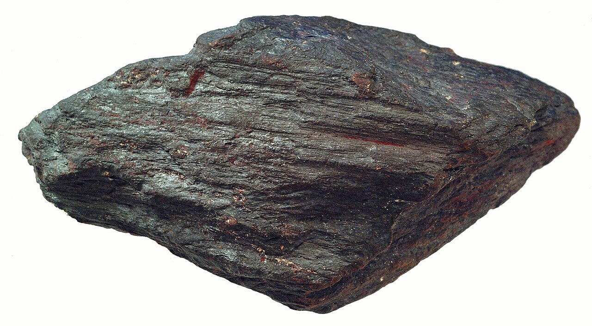

Asbestos
The name Asbestos appears in two distinct traditions: an iron-colored stone that burns without being extinguished, and a fibrous stone identified with Amiantos that cannot be burned. ¹ ³ ⁴ ⁶ Related forms include the White Carbuncle or White Pebble, and the alum-colored Amiatus or Amiantus. ² ⁵ ⁷ ⁸ Their descriptions and properties are distinguished below.
Generic
Description
These sources use related names for more than one fire-resistant stone. ⁴ ⁷ The iron-colored Abeston burns without being quenched; ¹ ³ ⁶ Iscustos splits into fibers that can be woven into cloth which fire cleans and whitens without consuming it. ² Other kinds are called White Carbuncle or White Pebble, or Amiatus and Amiantus. ² ⁸
Properties
Amatides resembles crushable alum. A cloth touched with it resists fire and shines in the flames, and the stone resists witchcraft. ¹⁰
Variants
| Subtype | Names and appearance | Found in | Properties |
|---|---|---|---|
| Subtype I: Perpetual-Flame Abeston | Abeston; ¹ Asbestos; Abestos; Asbeston; ⁵ Abestus. Iron-colored or steely, with a woolly texture. ³ | Arabia and Arcadia. ⁶ | Once kindled, its flame cannot be quenched; it burns without oil and withstands rain and storms. |
| Subtype II: Thread-Bearing Iscustos | Iscustos; Amiantos; ⁴ Amianton; Live Flax; ⁷ Salamander’s Feather or Down. A stone that splits into fibers. | Iscustos is found in Spain near Gades; ² no place is given for the other named forms. | Its fibers can be woven and spun; cloth made from them resists fire and is cleansed and whitened by it. Amianton fibers remain intact in fire and can form a sack for burning the dead while preserving their ashes. It resists poisons and sorcery. |
| Subtype III: White Carbuncle or White Pebble | A kind of Iscustos, named White Carbuncle or White Pebble. | Not stated. | Resists phantasms and illusions; ² remedies pains in the eyes caused by moisture; powdered, it cures scab. |
| Subtype IV: Alum-Colored Amiatus | Amiatus; Amiantus. Alum-colored and not destroyed by fire. | Not stated. | Resists potions made by magicians and is useful in medicines. ⁸ |
Subtype I: Perpetual-Flame Abeston

The image shows CC0 hematite specimen (source).

Abeston is iron-colored and is found in Arabia; ¹ ⁶ other accounts place it in Arcadia. Once kindled, its fire can hardly ever be quenched and is said to burn perpetually. ¹ ⁵ It was used in temple lamps that could burn in the open air without being put out by rain or storms. ³ Its fire is nourished by an inseparable, moist unctuousness in the stone, so it gives light without added liquid. ⁶
Subtype II: Thread-Bearing Iscustos
The image shows Chrysotile USGS specimen (source).

Iscustos splits into threads and is found near Gades in Spain. ² Woven into a garment, it does not burn but is cleansed and whitened by fire. ² Amianton, also called Live Flax, can be ground only after being placed over fire; ⁷ its fibers are not altered by the flame and can be spun like flax. Sacks made from it were used to burn the dead while keeping foreign matter from mixing with their ashes. Amiantos resists all poisons, especially those of magicians, and Amianton fights magical incantations and sorceries. ⁴
Subtype III: White Carbuncle or White Pebble

The image shows CC0 calcite specimen (source).

One kind of Iscustos is called White Carbuncle or White Pebble. ² It resists phantasms and illusions, remedies pains in the eyes caused by moisture, and, when reduced to powder, cures scab. ²
Subtype IV: Alum-Colored Amiatus

The image shows CC0 potash alum crystal (source).

Amiatus or Amiantus is alum-colored and cannot be destroyed by fire. ⁸ It resists potions made by magicians and is most useful in medicines. ⁸
Sources
1. St. Albertus Magnus — The Book of Minerals, Tractate II, Abeston
Abeston (asbestus) is the colour of iron and is mostly found in Arabia. Stories are told of its marvellous power, which is shown in temples of the gods: for once kindled, it can hardly ever be quenched, because it has the nature of a wool that is called “salamander’s down,” with a little moist, unctuous fatness inseparable from it; and this nourishes a fire kindled in it.
2. St. Albertus Magnus — The Book of Minerals, Tractate II, Iscustos
Iscustos (asbestus), as St. Isidore and Aaron agree, is a stone frequently found in the remotest parts of Spain, near Gades or the Gates of Hercules, in the third or second clime, outside the country we now call Spain. It is a stone that splits into threads, owing to the viscosity in it which has dried up. And if a garment is woven of it, it does not burn, but is cleansed and whitened by fire. And perhaps this is what they call “salamander’s feather,” for this wool is something like the wool of a moist stone. But the reason why it does not burn has been discussed in the Meteorology. One kind of this, he says, is the stone some people call “white carbuncle,” and some “white pebble”: it is like the Carbuncle in resisting phantasms and illusions; it is a remedy for pains in the eyes due to moisture; and reduced to powder, it cures scab.
3. St. Isidore of Seville — Etymologies XVI.IV.4, Asbestos
Asbestos is a stone from Arcadia, the color of iron; it was assigned its name from ‘fire’ because once set alight it is never extinguished. From this stone human art constructed a certain device that pagans, deceived by sacrilege, would marvel at. In short, there was a shrine of Venus in a certain temple precinct, and there was a candelabrum there with a lamp upon it burning in the open air in such a way that no storm or tempest could extinguish it.
4. St. Isidore of Seville — Etymologies XVI.IV.19, Amiantos
Amiantos (i.e. asbestos) was so named by the ancients because, if cloth was made from it, the cloth resisted fire, and even when placed in the fire did not burn, but acquired a radiant glow. It is similar to split alum, resistant to all poisons, especially those of magicians.
5. Marbodus of Rennes — De lapidibus, XXXIII, Asbeston
Of steely colour and of wondrous might
Arcadia’s hills produce th’ Asheston bright;
For kindled once it no extinction knows
But with eternal flame unceasing glows:
Hence with good cause the Greeks Asbeston name,
Because once kindled nought can quench its flame.
6. Camillo Leonardi — Speculum Lapidum, Abeston or Abestus
Abeston or Abestus [Asbestos] is a stone the color of iron, which is generated in Arcadia and Arabia, and is called abeston, or inextinguishable: in fact, once it is lit, its flame burns perpetually. Hence gentiles used it in temples’ candelabras, because it keeps the flame very strong and inextinguishable, neither rain nor storms can put it out. It has a wooly texture, and many call it the Salamander’s feather. The fire is nourished by a humid unctuousness that cannot be separated from its matter. Hence once it is lit, it perpetually gives light, without the addition of any type of liquid.
7. Camillo Leonardi — Speculum Lapidum, Amianton
Amianton is a thready and luminous stone, similar to feathered alum, but more unyielding. Many call it live flax, because it can only be ground after having been placed over the fire. It produces threads like flax: a result of its inseparable viscosity, which is not altered by fire. And thus just like flax it can be spun. When the ancients wanted to preserve the ashes of the dead, they would make sacks of amianton, in which they burned the corpses. This occurred without any damage to the sack, so that no strange matter would mix with the ashes. They say its virtue fights the incantations and sorceries of magicians.
8. Camillo Leonardi — Speculum Lapidum, Amiatus or Amiantus
Amiatus or Amiantus is an alum-colored stone that cannot be destroyed by fire. It resists potions made by magicians; it is most useful in medicines.
9. Bartholomaeus Anglicanus — De proprietatibus rerum, Book XVI, Chapter 12: Abeston
Abeston is a stone of Archadia with iron colour: and has that name of fire: if it be once kindled it never quenches. Of that stone is made that crafty ingin, of the which nations taken with sacriledge wondred. For in a Temple of Venus was made a candle stick, on which was a lantern so bright burning, that it might not be quenched with tempest, neither with rain, as Isidore says, lib. 15. cap. de Gemmis.
10. Bartholomaeus Anglicanus — De proprietatibus rerum, Book XVI, Chapter 19: Amatides
Amatides is a precious stone, if a cloth be touched therewith, the cloth withstands fire and burns not, though it put therein: But it receives brightness and seems the more cleere: and is lyks Alam, that may be brosed. And withstands all evil doing of witches, as Isidore says, li. 16. cap. 10.
11. Thomas Cantimpre — Liber de natura rerum, Book XIV: “On Precious Stones”, Albeston — Asbestos Stone
Albeston is a rust-coloured stone found in Arcadia. Once it has been kindled, it can never be extinguished, but always retains perpetual flames of fire. Isidore says of it that a device can be made whereby a lamp fashioned from this stone burns in the open air in such a way that no storm and no rain can extinguish it.
12. Thomas Cantimpre — Liber de natura rerum, Book XIV: “On Precious Stones”, Amanthos — Amianthus
Amanthos is an eastern stone resembling alum. A silk garment coated with this stone shines in the fire, becoming bright merely from the brilliance it receives. When immersed in water, it withstands poisoners and the illusions of magicians.